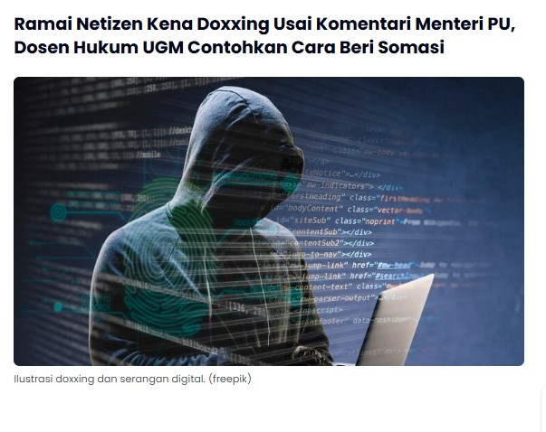

LKPD Pengayaan Informatika · Kelas XI · Bab 1 · Informasi Digital
Kartu 5: Dugaan Doxing terhadap Dosen yang Mengkritik Pejabat
Pemilihan Kelas
Kelas sudah dikunci di perangkat ini. Hubungi guru jika perlu mengubah.
Pilih kelas untuk menampilkan daftar anggota kelompok.
Studi Kasus
Dugaan Doxing terhadap Dosen yang Mengkritik Pejabat

Tangkapan layar kasus belum tersedia.
Tangkapan layar untuk pencarian gambar terbalik (Google Lens atau TinEye).
Klaim yang Beredar
Beredar kabar bahwa seorang dosen hukum yang mengkritik Menteri Pekerjaan Umum di media sosial X menerima ancaman, dan data pribadinya disebarkan (doxing).